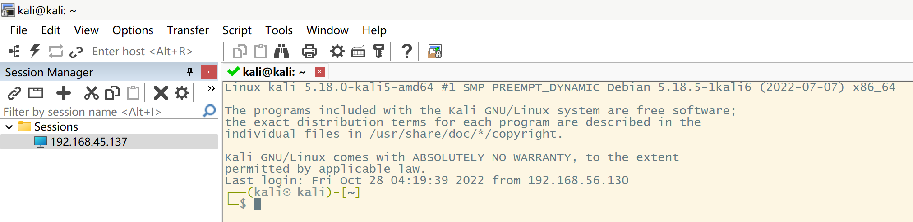
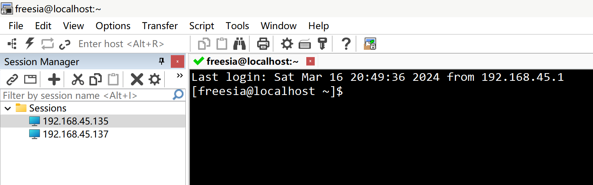

SecureCRT 的下载、安装和使用
参考自 SecureCRT 的下载、安装 | 超Ren专属 | CSDN 、 SecureCRT 的使用教程 | 超Ren专属 | CSDN 和 SecureCRT 的下载、安装、激活 | ytrunning | 知乎 。
简介
SecureCRT 是一个终端仿真应用程序，为计算专业人员提供安全的远程访问、文件传输和数据隧道。
下载
从官方网站下载资源：https://www.vandyke.com/cgi-bin/releases.php?product=securecrt 。
从百度网盘下载资源。
安装
双击 scrt_sfx833-x64.exe 运行安装程序。
点击 Next 。
勾选 I accept ... ，点击 Next 。
勾选 Common profile ，点击 Next 。
选择 Custom ，点击 Next 。
点击 Choose 选择自定义安装目录，点击 Next 。
默认勾选，点击 Next 。
点击 Install ，开始安装。
安装完毕，点击 Finish 。
激活方式参考 SecureCRT 的下载、安装、激活 | 知乎 | ytrunning 。
使用
SecureCRT
打开以后进入主界面，点击 File ，有三种连接：Connect... 、Quick Connect 和 Local Connect，分别是已存储的连接、快速连接和本地连接。
点击 Quick Connect ，默认是 SSH2 ，其中 Hostname 填写虚拟机 IP 地址， Username 填写虚拟机用户名，若是密钥登录，勾选 PublicKey ；若是密码登录，勾选 Password 。填写、勾选完毕后，点击 Connect 。
接下来填写并确认密码，勾选 Save password 保存密码，点击 OK 进行连接。
连接成功！
SecureFX
SecureFX 有两种打开方式：
1.如果已经打开 SecureCRT ，点击 SecureFX 图标即可打开。
2.如果没有打开 SecureCRT，打开 SecureFX 应用。
打开 SerureFX 后：
1.如果已经登录过 SecureCRT ， Sessions 有已连接过的 IP ，点击 Connect 直接连接。
2.如果没有登录过 SecureCRT ，进行与 SecureCRT 中相似的操作进行连接。
连接成功后，进入管理页面。
可直接手动拖动文件，文件传输成功后，会显示 Finished 。
其他
更改终端外观
点击 Options ，选择 Session Options... 。
选中 Appearance ，设置 Current color scheme 为 White/Black ，点击 Font... 调整字体和大小。
更改终端外观成功！
